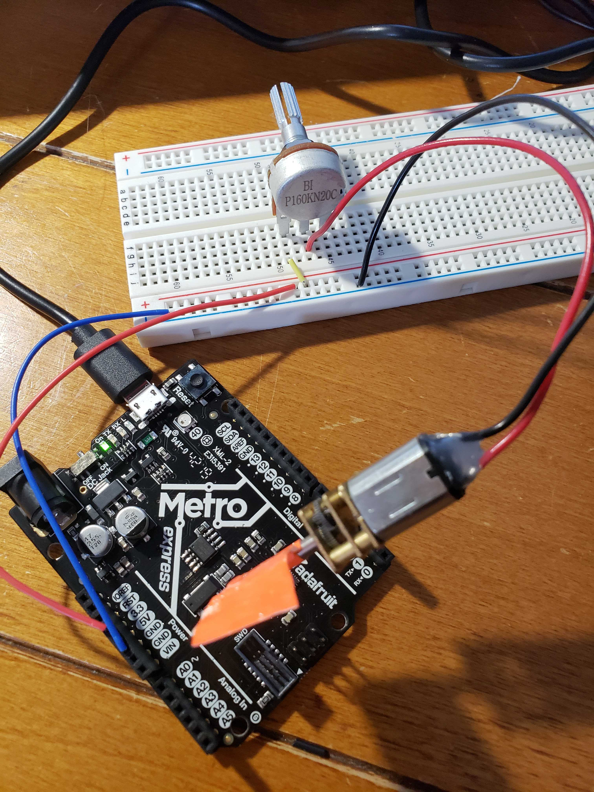

This week our goal was to create a kinetic sculpture and circuitry to move our sculpture. Inspired by Valentine’s Day, my project from last week, and the cardboard and water bottles available to me in my dorm room, as well as lots of improvising and playing with different methods and ways to attach my motor, I decided to create my sculpture called “Flower Garden”!
Materials Needed:
- 2D laser cutted cardboard pieces (see Week 2 for instructions for how to build the pentagons and hexagons used in my sculpture. I used 3 pentagon and 15 hexagon pieces.)
- Scotch tape
- Half-filled water bottle
- 3 LEDs (yellow, blue, and green)
- 3 100 ohm resistors
- Red and black wires and a wire cutter
- Potentiometer
- Metro M0 board and power source
Building the Circuit and Sculpture
The circuit consisted of a few major components: the potentiometer, the motor, three resistors, and three LEDs. I’ll break down the circuit building into two parts: 1) the potentiometer and the motor and 2) the resistors and LEDs.
In order to wire the potentiometer, I followed the examples from class during which we wired the potentiometer by wiring the positive pin to 3.3V, the middle pin to the positive side of the motor, and the negative side of the motor to GND.
Image courtesy of Victoria Shen
Once I successfully wired the potentiometer and the motor, I was happy that I had a working motor with changing resistance. But what would I do with the motor? I decided that if I wanted to move the motor away from the breadboard to have more flexibility in making my sculpture, I would have to make the wires longer. I cut about 18 inches (46 cm) of black and red wire and looped the ends to the motor’s wire to make the motor stretch away from the breadboard, but I think 12 inches (30 cm) would do since I had a lot of excess wire. I then used lots of tape (and some failed attempts at using glue) to tape the motor to the cardboard contraption. I used a half-filled water bottle as a stand and taped the motor to the water bottle cap and the long wires to the side of the water bottle.

At first I wanted to create a flower that both spun and lit up with LEDs, but after tangling the wires many times, I decided to create a separate light-up flower. Similar to how I cut the wires for the motor, I cut three red and three black wires measuring about 12-18 inches (30-46 cm). The black wires connected to GND on the breadboard and the negative end of the LEDs, and the red wires connected from one end of the 100 ohm resistors to the positive end of the LED. The resistors were connected from the positive row on the breadboard (3.3V) to the wire connecting to the LED.
At first I forgot to connect a resistor to an LED and burnt one out because I gave it too much power and not enough resistance! So I made sure to include a resistor with each LED connection to avoid burning out more LEDs.
I taped the LEDs to my cardboard flower and ended up with a beautiful light-up creation!

After I finished the two sculptures connected to my circuit, I decided to build another flower out of the cardboard pieces to finish up my garden.

Here's my final circuit:

And my final sculpture!